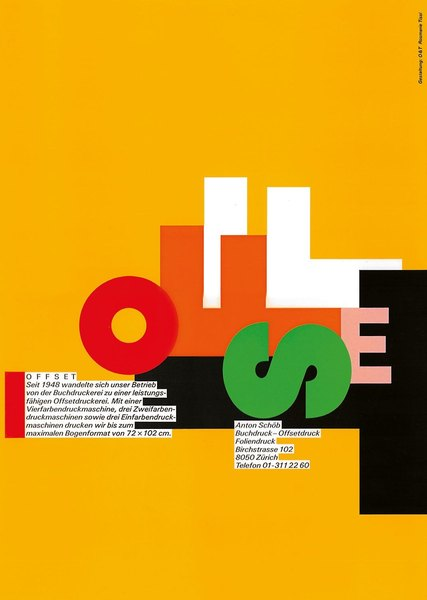
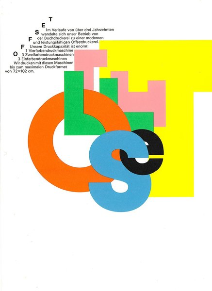

CRVI002798Rosmarie Tissi - Serenaden 92
1992
1992

CRVI002802Rosmarie Tissi - Serenaden 96
1996
1996

CRVI002803Rosmarie Tissi - Serenaden 98
1998
1998

CRVI002806Rosmarie Tissi - UCLA Extension

CRVI002807Rosmarie Tissi - Serenaden 93
1993
1993

CRVI002808Rosmarie Tissi - Offset, for Anton Schöb
1982
1982

CRVI002810Rosmarie Tissi - Internationale Musikfestwochen Luzern
1994
1994

CRVI002811Rosmarie Tissi - Fotosatz / Offset, for Anton Schöb

CRVI002812Rosmarie Tissi - World City Expo Tokyo '96
1994
1994